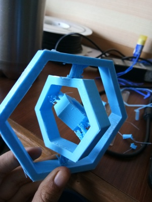
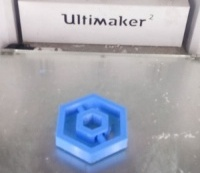

3-d Printing
Step-1
- As 3-d printing week was started we were given task of printing an object which could not be made by substractive method.
- So first task for me was to find out what is additive and substractive method.
Difference between additive and substractive method.
Step-2
- Now it was time to search for designs that could be only printed by additive method.
- So i went through lot of models and finalized to make gyroscope.
- Some of the designs which i went through were following.
Step-3
What is gyroscope and why it is used- As one is making any model one should understand what it is and why it is used.
- Gyroscope is a device consisting of a wheel or disc mounted so that it can spin rapidly about an axis which is itself free to alter in direction and it could not be made by substracting method.
Starting 3-d print
- In our lab we had ultimaker 2 so for that first of all i installed cura to operate it.
- So first of all for testing printer we printed robot.
- Then rutuja took a short session on how to set the basic parameters so that print can be done effectively and in short time
Paper Works
- Before doing anything it is necessary to list out things and do layout on paper to do work in proper direction.
- So first design the model and list down dimension to understand proper working.
Starting with designing
- I had kept layer height of 0.2 mm and infill-20% .
- I had kept distance of 0.4mm between hole and cylinder which was too small so it got stuck up with each other.
- Also keep equal spacing between all cylinder and holes.
- It is important factor to rotate object on proper axis
- I used cylinder as it was easy method one can also use triangles instead of cylinder.
- I had to stop my first trial print as there was some problem with printer.
- As you can see the model was not proper so it broke in some time and could not spin.
- The cylinders that were joining two layers were weak and broke off immediately.
I made my First design which look like this but it had lot of flaws



Another Model
- Noticing the flaws of first model I designed other testing model
- It got printed well but still it had errors so i went for other testing.


- I changed some parameters.
Final Design
- I designed my final print .
- But it is still not upto the mark of quality and smoothness that was needed.
Errors and Learning
- We learned lot of new things like different parameters and how it affects the quality of printing.
- As we were working in team all team members had different models.
- So we also learned from errors which were coming in the priting of team members.
- We learned how to do bed aligning when it does not print properly.
- We also explored cad with 3-d printing.